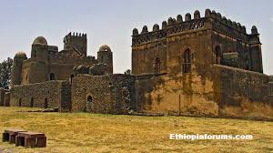

FACILEDES , also spelled Fasilidas, Fasiladas, or Basilide, (died 1667), Ethiopian emperor from 1632 to 1667, who ended a period of contact between his country and Europe, initiating a policy of isolation that lasted for more than two centuries.
Fasilides succeeded to the throne on the abdication of Susenyos (1632), who had permitted an increase of Spanish and Roman Catholic influence in Ethiopia. Fasilides reestablished a close alliance between the Ethiopian Coptic Christian Church and the ruling house, expelled Catholic missionaries, and enlisted the aid of the Muslim rulers of the coastal states to bar all Europeans from the country. He also created a new capital at Gonder, in order to protect the throne from the danger of invasions by the Galla peoples of the south.
society, assembled in the Kremlin, declared themselves for Peter, who was then proclaimed tsar, but the Miloslavsky faction exploited a revolt of the Moscow streltsy, or musketeers of the sovereign’s bodyguard, who killed some of Peter’s adherents, including Matveyev. Ivan and Peter were then proclaimed joint tsars, and eventually, because of Ivan’s precarious health and Peter’s youth, Ivan’s 25-year-old sister Sophia was made regent. Clever and influential, Sophia took control of the government; excluded from public affairs, Peter lived with his mother in the village of Preobrazhenskoye, near Moscow, often fearing for his safety. All this left an ineradicable impression on the young tsar and determined his negative attitude toward the streltsy.
One result of Sophia’s overt exclusion of Peter from the government was that he did not receive the usual education of a Russian tsar; he grew up in a free atmosphere instead of being confined within the narrow bounds of a palace. While his first tutor, the former church clerk Nikita Zotov, could give little to satisfy Peter’s curiosity, the boy enjoyed noisy outdoor games and took especial interest in military matters, his favourite toys being arms of one sort or another. He also occupied himself with carpentry, joinery, blacksmith’s work, and printing.
Near Preobrazhenskoye there was a nemetskaya sloboda (“German colony”) where foreigners were allowed to reside. Acquaintance with its inhabitants aroused Peter’s interest in the life of other nations, and an English sailboat, found derelict in a shed, whetted his passion for seafaring. Mathematics, fortification, and navigation were the sciences that appealed most strongly to Peter. A model fortress was built for his amusement, and he organized his first “play” troops, from which, in 1687, the Preobrazhensky and Semyonovsky Guards regiments were formed—to become the nucleus of a new Russian Army.
Early in 1689 Natalya Naryshkina arranged Peter’s marriage to the beautiful Eudoxia (Yevdokiya Fyodorovna Lopukhina). This was obviously a political act, intended to demonstrate the fact that the 17-year-old Peter was now a grown man, with a right to rule in his own name. The marriage did not last long: Peter soon began to ignore his wife, and in 1698 he relegated her to a convent.
In August 1689 a new revolt of the streltsy took place. Sophia and her faction tried to use it to their own advantage for another coup d’état, but events this time turned decisively in Peter’s favour. He removed Sophia from power and banished her to the Novodevichy convent; she was forced to become a nun after a streltsy rebellion in 1698. Though Ivan V remained nominally joint tsar with Peter, the administration was now largely given over to Peter’s kinsmen, the Naryshkins, until Ivan’s death in 1696. Peter, meanwhile continuing his military and nautical amusements, sailed the first seaworthy ships to be built in Russia. His games proved to be good training for the tasks ahead.

The first steps taken in this direction were the campaigns of 1695 and 1696, with the object of capturing Azov from the Crimean Tatar vassals of Turkey. On the one hand, these Azov campaigns could be seen as fulfilling Russia’s commitments, undertaken during Sophia’s regency, to the anti-Turkish “Holy League” of 1684 (Austria, Poland, and Venice); on the other hand, they were intended to secure the southern frontier against Tatar raids, as well as to approach the Black Sea. The first campaign ended in failure (1695), but this did not discourage Peter: he promptly built a fleet at Voronezh to sail down the Don River and in 1696 Azov was captured. To consolidate this success Taganrog was founded on the northern shore of the Don estuary, and the building of a large navy was started.Having already sent some young nobles abroad to study nautical matters, Peter, in 1697, went with the so-called Grand Embassy to western Europe. The embassy comprised about 250 people, with the “grand ambassadors” Franz Lefort, Fyodor Alekseyevich Golovin, and Prokopy Voznitsyn at its head. Its chief purposes
He also travelled abroad again for diplomatic reasons—e.g., to Pomerania in 1712 and to Denmark, northern Germany, Holland, and France in 1716–17.
In 1703, on the banks of the Neva River, where it flows into the Gulf of Finland, Peter began construction of the city of St. Petersburg and established it as the new capital of Russia in 1712. By the Treaty of Nystad (September 10 [August 30, O.S.], 1721) the eastern shores of the Baltic were at last ceded to Russia, Sweden was reduced to a secondary power, and the way was opened for Russian domination over Poland.
In celebration of his triumph, the Senate on November 2 (October 22, O.S.), 1721, changed Peter’s title from tsar to emperor (imperator) of all the Russias.
Back to top